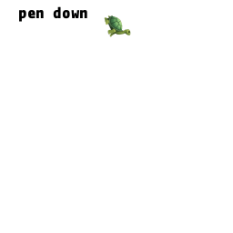
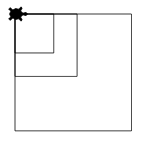
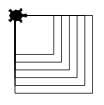
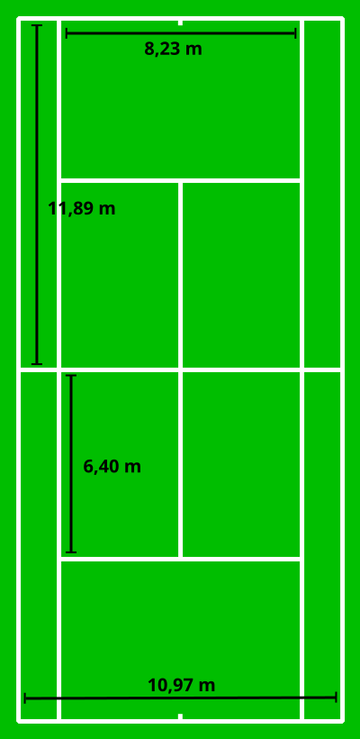

Les fonctions
🟥 1. Introduction¶
Dans un langage de programmation, on utilise ce qu'on appelle des fonctions. Une fonction est un ensemble d'instructions qui peut recevoir des paramètres (qui sont des valeurs ou des variables) et qui peut renvoyer le contenu d'une ou plusieurs variables.
❔ Pourquoi utilise-t-on le mot fonction ?
Par analogie, on utilise le même terme qu'en mathématiques car le principe est identique puisqu'une fonction mathématique reçoit aussi des paramètres et renvoie des valeurs.
Premier exemple¶
Exemple 1 : Prenons la fonction mathématique f définie par f(x) = 2x +1. Celle-ci reçoit un paramètre (ici x) et renvoie une valeur (ici 2x+1). Cette fonction mathématique f s'écrirait en la fonction Python suivante.
def f(x):
return 2 * x + 1
Les fonctions (en programmation) ne servent pas qu'à faire des mathématiques, loin de là, et sont énormément utilisées, partout, tout le temps.
Syntaxe d'une fonction Python¶
Une fonction Python a la syntaxe suivante :
def nom_fonction(parametre1, parametre2, etc.):
instruction1
instruction2
...
return valeur_renvoyee_1, valeur_renvoyee_2, etc.
Analyse :
- Le mot clé
defannonce que l'on va écrire une fonction ; - On commence par écrire le nom de notre fonction ;
- Ensuite, entre parenthèses, on écrit ses paramètres séparés par des virgules (il se peut qu'une fonction ne possède pas de paramètres, auquel cas on écrit tout de même les parenthèses mais avec rien entre elles) ;
- On termine la ligne par un deux points (
:) ; - On indente et écrit toutes les instructions devant être exécutées par la fonction : toutes les lignes indentées correspondent au bloc d'instructions ;
- Enfin, le bloc d'instruction se termine généralement par le mot clé
returnqui permet de renvoyer le contenu d'une ou plusieurs variables (séparées par des virgules s'il y en a plusieurs)
Pour fixer les idées, prenons un exemple concret.
Deuxième exemple¶
Exemple 2

Sur un site de vente en ligne, il est possible de modifier la quantité du produit que l'on souhaite acheter (souvent avec des boutons "+" et "-"). Prenons l'exemple d'un paquet de farine bio coûtant 1,15 €. À chaque clic sur un des boutons "+" ou "-", une fonction est chargée de calculer le prix à afficher à l'écran en fonction de la quantité sélectionnée par l'acheteur. Cette fonction pourrait être définie en Python de la façon suivante.
def prix_a_afficher(quantite):
prix = 1.15 * quantite
return prix
✏️ Activité 1 : Maîtriser le vocabulaire
✍️ Question : Inspectez le code de cette fonction pour repérer :
- son nom
- son nombre de parametres et leurs noms
- son bloc d'instructions
- le nombre de valeurs renvoyées et leurs noms
def prix_a_afficher(quantite):
prix = 1.15 * quantite
return prix
🆘 N'hésitez pas à bien relire le paragraphe Syntaxe d'une fonction Python pour répondre.
🟥 2. Écrire et appeler une fonction¶
Lorsqu'une fonction est écrite, on peut exécuter son code mais il ne se passera rien à l'écran car cela permet juste de mémoriser la fonction, autrement dit d'enregistrer en mémoire ce que doit faire la fonction.
Pour utiliser une fonction et exécuter son bloc d'instructions, il faut l'appeler pour connaître la valeur qu'elle renvoie, c'est ce que l'on propose dans l'activité qui suit.
✏️ Activité 2 : Écrire et appeler une fonction
Commencez par exécuter la cellule suivante et regardez la vidéo qui explique comment écrire et appeler une fonction, à la fois dans un notebook et dans un éditeur de code.
from IPython.display import HTML
HTML("""<iframe width="560" height="315" src="https://www.youtube-nocookie.com/embed/WzF7PqUCzm8" title="YouTube video player" frameborder="0" allow="accelerometer; autoplay; clipboard-write; encrypted-media; gyroscope; picture-in-picture" allowfullscreen></iframe>""")
🐍 Question 1 (dans le notebook) : Recopiez dans la cellule ci-dessous tout le code de la fonction prix_a_afficher que l'on rappelle ci-dessous (sans faire de copier-coller, c'est pour apprendre). Faites attention à ne pas oublier les deux-points à la fin de la première ligne et à respecter les indentations !
def prix_a_afficher(quantite):
prix = 1.15 * quantite
return prix
# à vous de jouer !
def prix_a_afficher(quantite):
prix = 1.15 * quantite
return prix
🐍 Question 2 : Appelez la fonction prix_a_afficher pour connaître le prix total affiché si on sélectionne 5 paquets de farine, puis si on en sélectionne 2 paquets de farine.
# à vous de jouer ! (pour 5 paquets)
prix_a_afficher(5)
# à vous de jouer ! (pour 2 paquets)
prix = prix_a_afficher(2)
prix
Comme indiqué dans la vidéo, dans un éditeur de code c'est un peu différent : on écrit le code de la fonction dans la zone d'édition (à gauche dans Basthon) et on l'appelle dans la console (à droite dans Basthon).
🐍 Question 3 (dans un éditeur de code) : Lancez l'éditeur Basthon en cliquant sur ce lien https://console.basthon.fr/ puis recopiez dans la zone de gauche le code de la fonction prix_a_afficher.
🐍 Question 4 (dans un éditeur de code) : Exécutez le code de cette fonction dans l'éditeur Basthon puis appelez la fonction dans la console (à droite) pour connaître le prix total affiché si on sélectionne 5 paquets de farine puis si on en sélectionne 2.
Une image numérique est constituée de pixels. Le nombre total de pixels composant une image s'appelle la définition de l'image.
Par exemple, une image de 800 pixels en largeur et 600 pixels en hauteur a une définition égale à 800 x 600 = 480 000 pixels.
✍️ Question 1 : Calculer à la main la définition de l'image d'illustration ci-dessus (on supposera que chaque carré colorié correspond à 1 pixel).
🐍 Question 2 : On veut écrire une fonction appelée definition_image qui possède deux paramètres L et H correspondant aux nombres de pixels en largeur et en hauteur de l'image. Cette fonction doit calculer et renvoyer la définition de cette image.
Complétez la fonction ci-dessous (vous remplacerez les pointillés).
def definition_image(L, ...):
d = ... * ...
return ...
🐍 Question 3 : Appelez cette fonction pour connaître la définition d'un image de 800*600 pixels.
# à vous de jouer !
🐍 Question 4 : Appelez cette fonction pour connaître la définition de l'image d'illustration ci-dessus. Vous comparerez la valeur renvoyée avec votre réponse à la question 1.
# à vous de jouer !
🐍 Question 5 : Lancez l'éditeur Basthon (https://console.basthon.fr/) puis recopiez, exécutez et appelez cette fonction pour retrouver les résultats aux questions 3 et 4.
✏️ Activité 4 : Dessiner avec la tortue

Crédit : Cormullion, CC BY-SA 4.0, via Wikimedia Commons.

Dans Scratch, on trouve quelques blocs de base, pour avancer ou faire tourner le chat :
Cela permettait, entre autres, de faire dessiner le chat (ou le lutin).
En Python, on peut utiliser le module turtle (= tortue en français) pour dessiner. Avec ce module, les équivalents des blocs de base précédents sont les fonctions forward, right et left, qui permettent de faire avancer ou tourner une tortue :
forward(x)pour faire avancer dexpixelsright(a)pour faire tourner deadegrés vers la droiteleft(a)pour faire tourner deadegrés vers la gauche
Pour dessiner, on appelle ces fonctions les unes à la suite des autres avec les paramètres souhaités (c'est l’équivalent d’imbriquer les blocs les uns à la suite des autres avec Scratch)
Par exemple :
forward(100)
right(90)
forward(50)
left(45)
forward(200)
Pour utiliser ces fonctions il faut dire en première ligne à Python que l'on veut charger le module turtle. Cela se fait avec l'instruction
from turtle import *
Exécutez les instructions ci-dessous pour voir un premier dessin !
from turtle import * # pour charger le module turtle
forward(100)
right(90)
forward(50)
left(45)
forward(200)
done() # pour demander l'affichage du tracé
⚠️ La dernière instruction,
done(), permet de demander l’affichage du tracé. Si on l’oublie, il ne se passe rien.
✍️ Question 1 : Combien les fonctions forward, right et left possèdent-elles de paramètres ? Expliquer rapidement.
🐍 Question 2 : Complétez les instructions suivantes pour dessiner un carré, de 50 pixels de côté. Puis exécutez les instructions pour vérifier (et corriger si nécessaire).
from turtle import *
forward(...)
...
...
...
...
...
...
...
done()
🐍 Question 3 : Écrivez les instructions permettant de dessiner un carré, de 100 pixels de côté, puis les exécutez.
# à vous de jouer !
🧐 Normalement, vous avez du écrire quasiment les mêmes instructions aux questions 2 et 3. Ce n'est pas forcément efficace. Vous allez voir qu'il est préférable de définir une fonction permettant de dessiner un carré puis de l'appeler à chaque fois que l'on veut dessiner un carré.
🐍 Question 4 : On veut écrire une fonction carre qui possède un paramètre taille qui correspond à la taille des côtés du carré dessiné.
Exemples : L'appel carre(50) devra dessiner un carré de côté 50 pixels, l'appel carre(80) devra dessiner un carré de côté 80 pixels.
def carre(taille):
forward(...)
right(...)
... # à poursuivre
Pensez à bien exécuter la cellule ci-dessus pour mémoriser la fonction carre.
On peut maintenant appeler cette fonction pour tracer d'affilée trois carrés de tailles différentes :
carre(80)
carre(50)
carre(150)
done()
Ces instructions doivent produire le dessin ci-dessous, si ce n'est pas le cas il faut corriger le code de votre fonction carre.

🐍 Question 5 : On veut obtenir la figure ci-dessous. Écrivez les bonnes instructions. Ne pas oublier de terminer par done() !

# à vous de jouer !
💪 Défi !
Créez une fonction rectangle qui permet de dessiner un rectangle qui possède la longueur et la largeur voulue, puis utilisez cette fonction pour dessiner un court de tennis dont on rappelle les dimensions ci-dessous.

# à vous de jouer !
🟥 Bilan¶
- Une fonction permet de regrouper une série d'instructions.
- Une fonction possède un nom, éventuellement des paramètres qui sont utilisés dans le bloc d'instructions de la fonction. La fonction renvoie généralement une ou plusieurs valeurs.
- On peut faire appel à une fonction pour exécuter les instructions qu'elle contient et connaître la valeur renvoyée par celle-ci. On l'appelle par son nom en précisant les valeurs des paramètres souhaités entre parenthèses.
- En Python :
- on utilise le mot clé
defpour annoncer que l'on va écrire une fonction - suivi du nom de la fonction puis de ses paramètres écrits entre parenthèses
- il ne faut pas oublier le
:à la fin de la première ligne - le bloc d'instructions d'une fonction doit être indenté
- c'est le mot clé
returnqui permet de renvoyer une ou plusieurs valeurs
- on utilise le mot clé
def nom_fonction(parametre1, parametre2, etc.):
instruction1
instruction2
...
return valeur_renvoyee_1, valeur_renvoyee_2, etc.
- L'un des intérêts d'une fonction est de pouvoir regrouper des instructions susceptibles d'être utilisées à plusieurs reprises. Cela permet donc d'alléger le code puisqu'il suffit ensuite d'appeler la fonction sans avoir à recopier toutes ses instructions à chaque fois.
- Il y a d'autres raisons qui font que l'on utilise beaucoup les fonctions en programmation mais nous ne les aborderons pas.
Références :
- Les travaux d'Alexandre André sur le module
turtle: De Scratch à Python : le chat et la tortue et Tortue : fonctions, frises, feu d'artifice pour les idées de l'activité 4.
Les enseignants de SNT du lycée Emmanuel Mounier, ANGERS